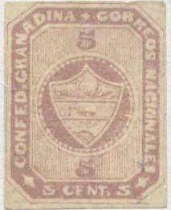

Return To Catalogue - Colombia overview
Note: on my website many of the
pictures can not be seen! They are of course present in the
catalogue;
contact me if you want to purchase it.
5 c lilac 10 c yellow 20 c blue
Value of the stamps |
|||
vc = very common c = common * = not so common ** = uncommon |
*** = very uncommon R = rare RR = very rare RRR = extremely rare |
||
| Value | Unused | Used | Remarks |
| 5 c | *** | *** | |
| 10 c | *** | *** | |
| 20 c | R | R | |
Cancels: most stamps are cancelled with a penstroke:

Forgeries, examples:
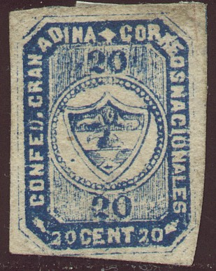
Forgeries with white background behind the shield. One of these
forgeries has a "ZEITUNGS
EXPEDITION" cancel, which also appears on forgeries of
many other countries.
I think this is the forgery of the 5 c mentionned in 'Album Weeds'; the diamond above the upper '5' is too large, the 'D' of 'GRENADINA' is placed higher than 'INA'. The shield behind the arms is white instead of coloured. the 20 c stamp beside it is probably from the same forger, though it is not mentioned in Album Weeds.
Album Weeds mentions forgeries of the 10 c and 20 c with inscription "10 CENTS" and "20 CENTS" instead of "10 CENT 10" and "20 CENT 20" as in the genuine stamps.
There also exist two bogus issues of 2 1/2 c green and 1 P red:
(Bogus issues)

Strange (engraved?) 5 c forgery?


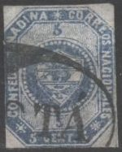
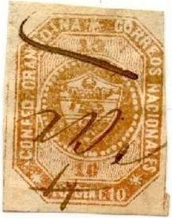


2 1/2 c green 5 c lilac to violet 10 c orange (to brown) 20 c blue 1 P red
Value of the stamps |
|||
vc = very common c = common * = not so common ** = uncommon |
*** = very uncommon R = rare RR = very rare RRR = extremely rare |
||
| Value | Unused | Used | Remarks |
| 2 1/2 c | *** | *** | |
| 5 c | *** | *** | Misprint 5 c blue: RRR |
| 10 c | *** | *** | Also exists in other shade (brown to orange) |
| 20 c | ** | ** | |
| 1 P | *** | *** | |
Tete-beche stamps of the 5 c value.
An old reprint of the 1 P exists. According to the Ohrt book of reprints, the reprint has no guidelines between stamps and the print is more blur than in the originals.
Modern reprints made in 1959; two 5 c tete-beche stamps in a
mini-sheet.

Zoom-in of the above minisheet.
Examples:
The bottom inscriptions in the above forgeries are "10 CENTS" and "1 PESO", it should be "10 CENTS 10" and "1 PESO 1". In the 1 P the two '1's above and below the circle are standing. I think in the genuine stamps they should be lying down.
Second forgery of the 20 c in Album Weeds
The above forgery is probably the second forgery of the 20 c value as described in the book 'Album Weeds'. It has the central circle too larger, also the values '20' above and below this circle are different from the genuine stamps. The pearls of the central circle are too small.
I presume the above stamp is a forgery too. It might have been made by the same forger as the above 20 c forgery.
(Reduced size)


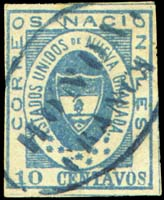


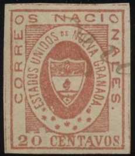

2 1/2 c black 5 c yellow 10 c blue 20 c red 1 P red
There seem to be 54 varieties of the 5 c, 20 c and 1 P stamps.
Value of the stamps |
|||
vc = very common c = common * = not so common ** = uncommon |
*** = very uncommon R = rare RR = very rare RRR = extremely rare |
||
| Value | Unused | Used | Remarks |
| 2 1/2 c | RR | RR | |
| 5 c | R | R | |
| 10 c | R | R | |
| 20 c | R | RR | |
| 1 P | R | RR | |
Typical cancels:


("0" cancel in red and blue)

"BOGOTA" cancel.
Forgeries, there are at least 8 different forgeries of these stamps, examples:
Forgery of the 2 1/2 c with the "2"s too flat at the
bottom.

5 c forgery with "O" of "NACIONALES" too
rounded.
This forgery seems to be quite common and can be recognized by the fact that there are only eight asterisks in the lower part of the oval, instead of nine in the genuine stamps. There are many more differences, for example the "T" of "ESTADOS" has a very large top stroke. Also note that the shield contains things that are quite different from the genuine stamps. They often have the line cancel "BOGOTA". Other cancels exist, such as "STA.CATHAR.." (larger size), "ANTIOQUIA" or a cancel consisting of dots.
The 1 p and 2 1/2 c of this forgery can be recognized very easily:
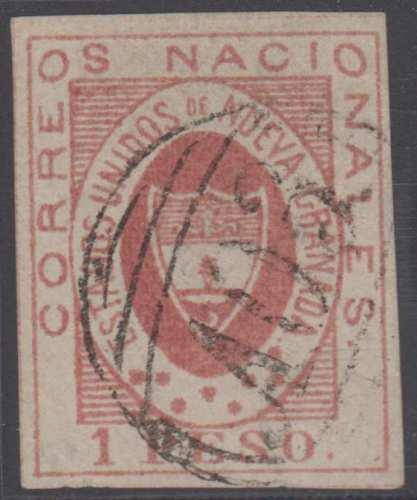

"1 PESO" instead of "UN PESO", the third
stamp has a "A03" (British Guiana) cancel.
The inscription of the 1 P should be "UN PESO" and not "1 PESO" as in the above forgery!
"2 1 2" instead of "2 i 1/2"; the stamp on
the right is an improvement with "2 1/2".
In the 2 1/2 c the inscription should read "2 i 1/2" and not "2 1 2" as in the above forgery. The fourth forgery of Album Weeds is identical to the third one, except that the 'comma' in the shield has been redrawn (sorry, no image available yet).
Another forgery set (fifth forgery of Album Weeds). The
"S" of "UNIDOS" is placed under the
"N" of "NACIONALES". The word "DE"
is placed too far to the right. Note the two different types of
the 2 1/2 forgery, written as '2 1 2' and '2 1/2'.


Eight forgery of Album Weeds; the "T" of
"ESTADOS" is slanting. This forgery is printed on
yellowish paper. According to Album Weeds, this forgery exists
with the above shown "O" cancel in red or black color.
Oswald Schroeder forgeries:
The forger Oswald Schroeder made forgeries of all values. They are quite deceptive.
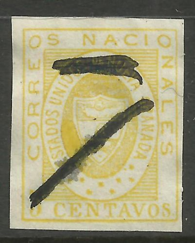
I've been told that this is a Schröder forgery. I'm not sure if
this information is correct.
I've seen 'Schroeder die proofs' consisting of 2 stamps printed together, but with a huge coloured border around each stamp.
The forger Sperati made at least one forgery of the 2 1/2 c, one of the 10 c and two forgeries of the 1 P value (reproduction 'A' and 'B'):
Sperati forgery, reproduction 'A'
In Sperati's reproduction 'B' of the 1 P value, there is a white space just above the 'U' of 'UN'.

Sperati reproduction 'B'.

Sperati 'proof' forgeries of the 5 c and 10 c values.
(Reduced size)
10 c blue 20 c red 50 c green 1 P lilac
Value of the stamps |
|||
vc = very common c = common * = not so common ** = uncommon |
*** = very uncommon R = rare RR = very rare RRR = extremely rare |
||
| Value | Unused | Used | Remarks |
| 10 c | R | R | |
| 20 c | RR | RR | |
| 50 c | R | R | |
| 1 P | RR | RR | |
Forgeries, examples:

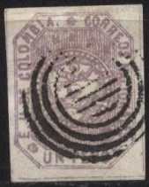
Genuine stamps should have 45 pearls in the circle (the top ones hardly visible), there should also be white dots in the stars (according to 'The Forged Stamps of all Countries' by J.Dorn).
(Other forgeries)
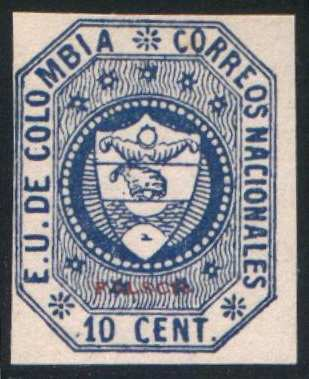
(Forgery with overprint "FALSCH" = forged in German,
made by Senf). The word
"FALSCH" has been barred in the next stamp.
Forgeries of the 10 c value.
Forgery of the 20 c value.

50 c Sperati forgery, this forgery has 'SPERATI REPRODUCTION'
printed on the backside, together with '256' written manually.

Another 10 c forgery
I've seen 'Schroeder die proofs' with a huge coloured border around each stamp.


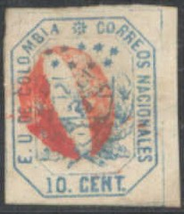


5 c yellow 10 c blue 20 c red 50 c green
There are 10 varieties of each of these stamps.
Value of the stamps |
|||
vc = very common c = common * = not so common ** = uncommon |
*** = very uncommon R = rare RR = very rare RRR = extremely rare |
||
| Value | Unused | Used | Remarks |
| 5c | *** | *** | |
| 10 c | *** | *** | |
| 20 c | *** | *** | |
| 50 c | *** | R | Reprint: ** |
Forgeries, there are at least eight different kind of forgeries, examples:


The 'E' of 'E.U.' and the 'S' of 'NACIONALES' should be on a horizontal line. In the above forgeries the 'S' is clearly lower than the 'E'. There are also two stars in front and behind the '20 CENT' (copied from the previous issue?). These forgeries were possibly made by the forger Spiro (judging from the cancels).
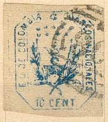


Other forgery
Another 5 c stamp that I don't quite trust....
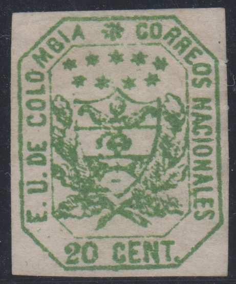
A 20 c green 'misprint' forgery and a 50 c forgery.
For Colombia issues of 1864 onwards click here
Stamps - Timbres-Poste - Briefmarken


{kind=link}
{kind=link}
{kind=link}
{kind=link}
{kind=link}
{kind=link}
{kind=link}
{kind=link}
{kind=link}